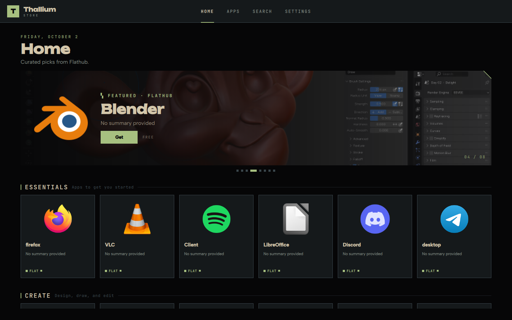
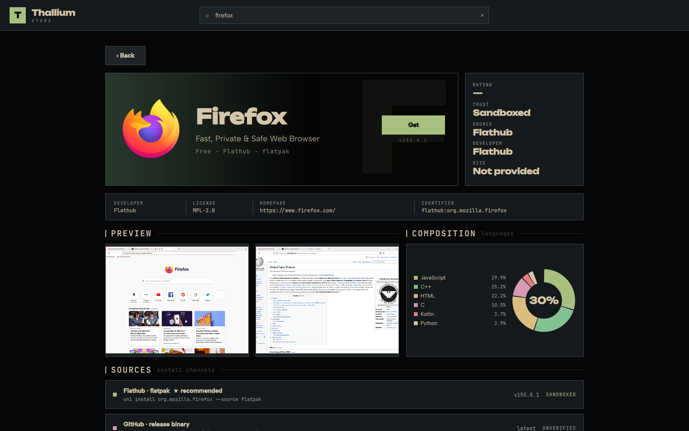
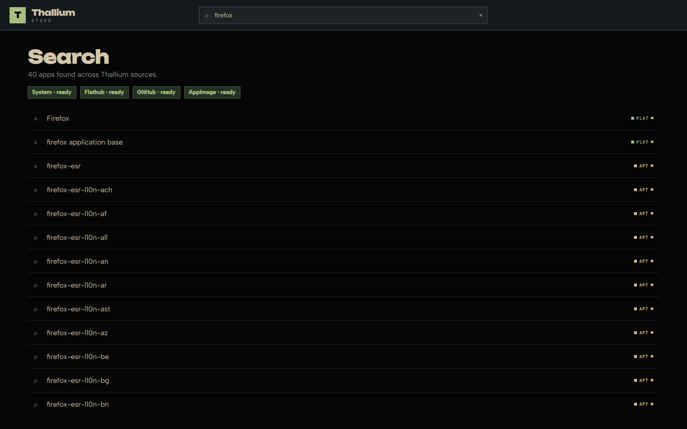

Every Linux app.
One store.
Search apt, Flathub, GitHub releases and AppImages at once. Every app shows every channel it ships on, with the safest one recommended.
curl -fsSL https://store.thallium81.dev/install.sh | sh

A front end, not a new source.
Thallium Store does not host apps and has no package server of its own. It searches the sources your system already uses, then hands the install to that source's own tool. Every app comes from the same place it would if you typed the command yourself.
apt / pacman
apt install vlcFrom your distro's own mirrors, signed by your distro.
flatpak
flatpak install flathub org.videolan.VLCFrom flathub.org, sandboxed, the same as GNOME Software or Discover.
AUR helper
paru -S spotifyThrough paru or yay, so you see the PKGBUILD as usual.
Release files
github.com/<owner>/<repo>/releasesDownloaded from the project's own release page and marked unverified.
Search once. Every source answers.
Results are merged and de-duplicated, then each variant is tagged with how much it can touch your system.
Ranked by safety
Sandboxed, system access, verified, unverified — every install channel is labelled, and the safest is recommended.
See the exact command
Detail pages list each source with the precise command it will run before you press Get.
AppImage installer
Open any .AppImage to see its name, version, origin and signature before anything runs, then install it with a real launcher.
Editorial home
Hand-picked collections and a featured carousel painted with real Flathub artwork.
Source languages
Open-source apps show what they are written in, straight from GitHub's linguist data.
Paints instantly
Icons and details are cached on disk; the network is only touched for search, artwork and metadata.
Everything before you install.
Screenshots, licence, homepage, size, and every channel the app ships on — side by side, with trust labels you can read at a glance.
- Flathub · flatpakSANDBOXED
- System · aptSYSTEM ACCESS
- GitHub · release binaryUNVERIFIED

All sources, one list.
Fast local sources answer first while GitHub catches up, and each result carries its source tag — so you know where an app comes from before you open it.

One command. Nothing to choose.
Run it on any x86_64 Linux: Debian, Ubuntu, Arch or Fedora. The script works out what your system has and installs the store that fits it.
curl -fsSL https://store.thallium81.dev/install.sh | sh
What the install script does.
You're right not to pipe random scripts into a shell. This one is a short POSIX sh file, and here is everything it does, in order.
- Looks at your system. If this is Thallium 81 it stops, because the store is already installed. Otherwise it checks your distro, package manager and desktop, and picks the build to install. You don't choose anything.
- Downloads the store and checks it. Every download is compared with a SHA-256 checksum, and the signing key is checked against a value written into the script. On any mismatch it stops and installs nothing.
- Checks for missing libraries. If your system lacks a library the store needs, it names the package to install and stops, so you never end up with a half-working install.
- Installs into your home folder at
~/.local/lib/thallium-store, with no password. If you already run Quickshell on Debian 13, it adds one APT source instead and asks for your password once. That source is pinned, so it can only supplythallium-storeand never replace another package. - Adds a menu entry and stops. It installs no background service, changes no other packages, and writes nothing outside the paths above. Run the same command again to update.
Prefer to read it yourself first? Download it, open it, then run it:
Show the full script served at /install.sh
Loading…
Source: scripts/install-repository (this one) and the native Qt installer. GPL-3.0.